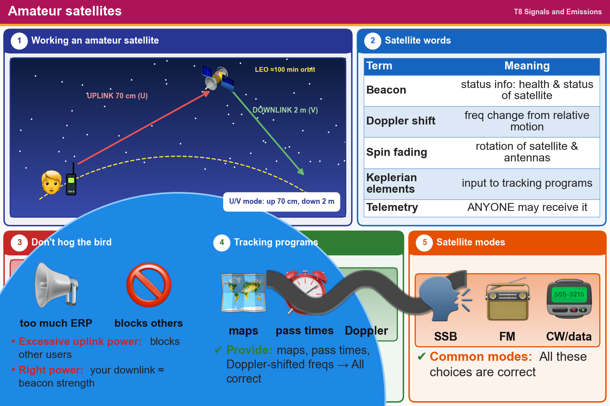

💡 U/V = up on 70 cm, down on 2 m. Doppler shift comes from motion. Don't use more uplink power than you need.
Pick an answer for each question, then press Grade at the bottom.
T8B08
What does it mean if a satellite is operating in U/V mode?
✘A.The satellite frequencies are usually variable
✘B.The satellite uplink is in the 15-meter band and the downlink is in the 10-meter band
✔C.The satellite uplink is in the 70-centimeter band and the downlink is in the 2-meter band
✘D.The satellite operates using ultraviolet frequencies
T8B10
What does the term LEO mean in reference to communication satellites?
✔A.Low Earth Orbit, which has a period of around 100 minutes
✘B.Low Energy Orbit, which conserves battery power
✘C.Low Equilibrium Orbit, which has a slightly unstable period
✘D.Low Elevation Orbit, which appears close to the horizon from the earth station
T8B01
What telemetry information is typically transmitted by satellite beacons?
✘A.The signal strength of received signals
✔B.Health and status of the satellite
✘C.Time of day accurate to plus or minus 1/10 second
✘D.All these choices are correct
T8B05
What is a satellite beacon?
✘A.A reflective surface on the satellite
✔B.A transmission from a satellite that contains status information
✘C.The primary transmit antenna on the satellite
✘D.An indicator light that shows where to point your antenna
T8B11
Who is permitted to receive telemetry from an amateur radio satellite?
✘A.Only the satellite control operator
✘B.Only the control operator or a licensed radio amateur who has received the encryption key from the control operator
✔C.Anyone
✘D.Only a licensed radio amateur who has received the encryption key from AMSAT
T8B07
What is Doppler shift in reference to satellite communications?
✘A.A special digital communications mode for some satellites
✘B.A change in the satellite orbit
✔C.An observed change in signal frequency caused by relative motion between the satellite and Earth station
✘D.A mode where the satellite receives signals on one band and transmits on another
T8B09
What causes spin fading of satellite signals?
✘A.Circular polarized noise interference radiated from the sun
✘B.Doppler shift of the received signal
✔C.Rotation of the satellite and its antennas
✘D.Interfering signals within the satellite uplink band
T8B06
Which of the following are inputs to a satellite tracking program?
✔A.The Keplerian elements
✘B.The last observed time of zero Doppler shift
✘C.The satellite transmitted power
✘D.All these choices are correct
T8B03
Which of the following are provided by satellite tracking programs?
✘A.The time, azimuth, and elevation of the start, maximum altitude, and end of a pass
✘B.Maps showing the real-time position of the satellite track over Earth
✘C.The apparent frequency of the satellite transmission, including effects of Doppler shift
✔D.All these choices are correct
T8B02
What is the impact of using excessive effective radiated power on a satellite uplink?
✘A.Possibility of rebooting the satellite control computer
✔B.Blocking access by other users
✘C.Possibility of commanding the satellite to an improper mode
✘D.Overloading the satellite batteries
T8B12
Which of the following is a way to determine whether your satellite uplink power into a linear transponder satellite is neither too low nor too high?
✘A.Compare your signal to others on the downlink using an internet SDR receiver
✘B.Listen for distortion on your downlink signal
✘C.Check your signal strength report in the telemetry data
✔D.Your signal strength on the downlink should be about the same as the beacon
T8B04
What mode of transmission is commonly used by amateur radio satellites?
✘A.FM
✘B.SSB
✘C.CW/data
✔D.All these choices are correct